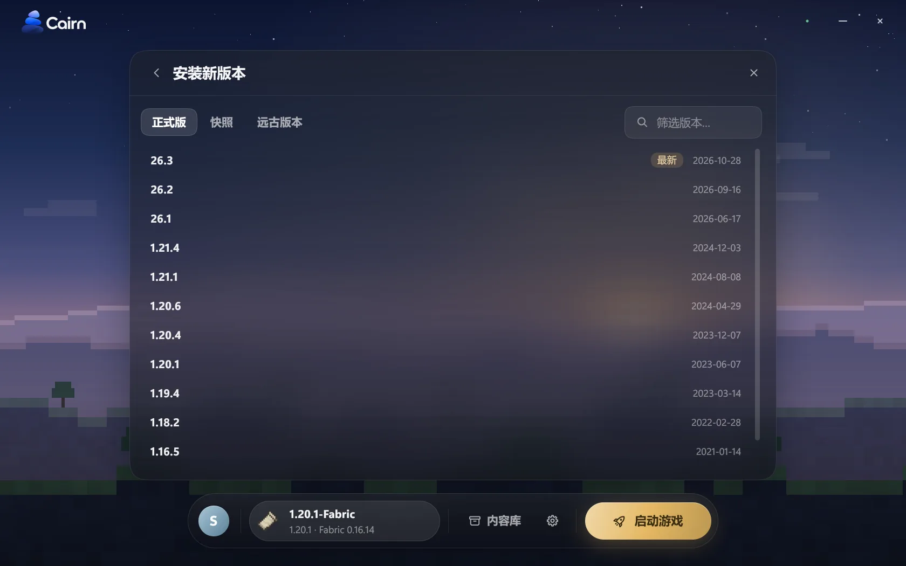
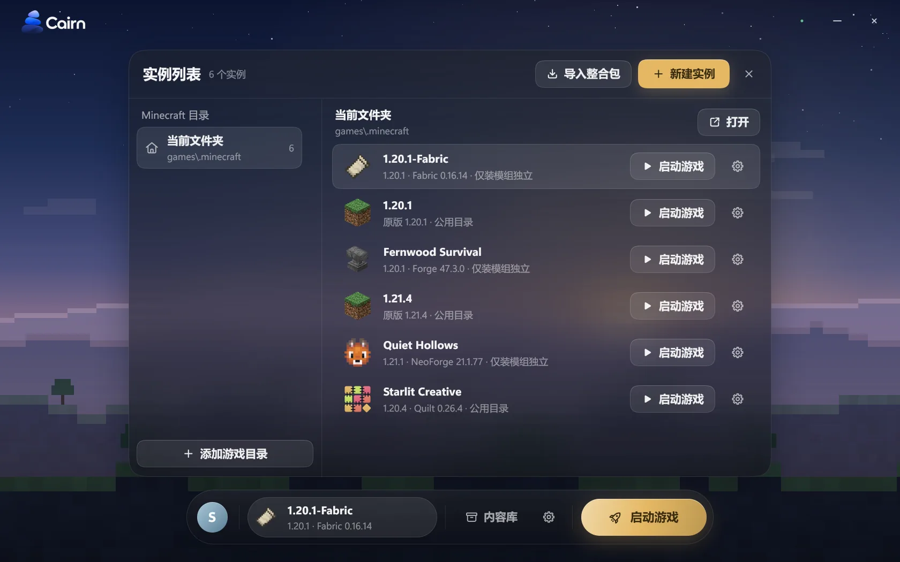
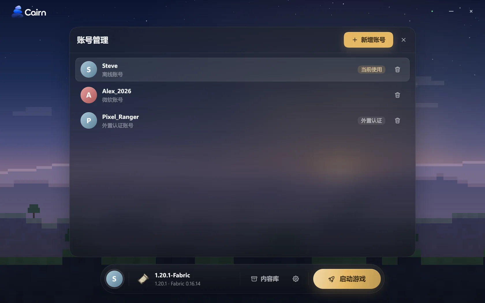
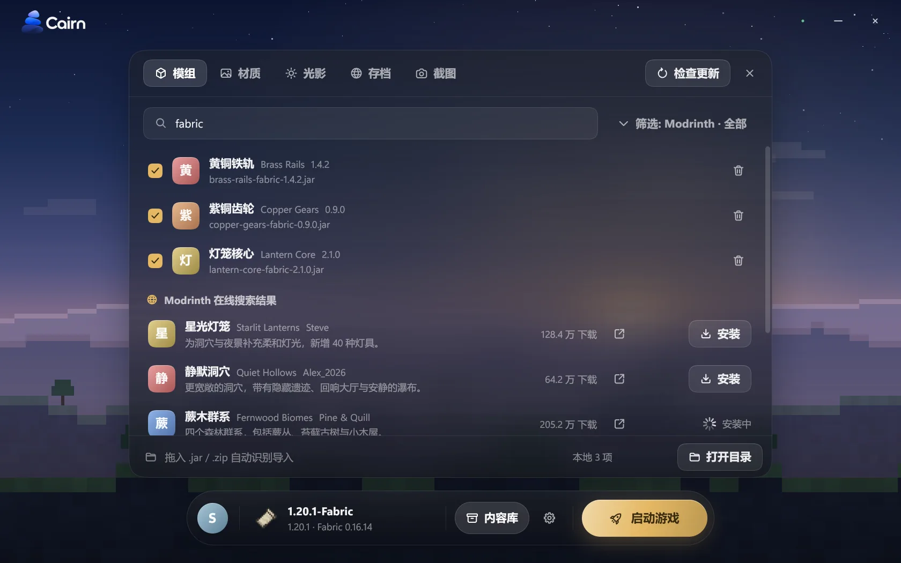
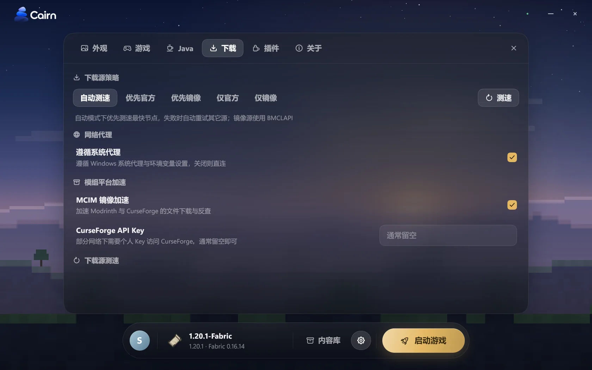
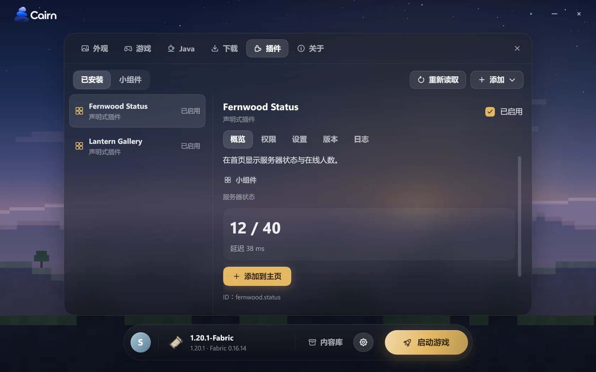
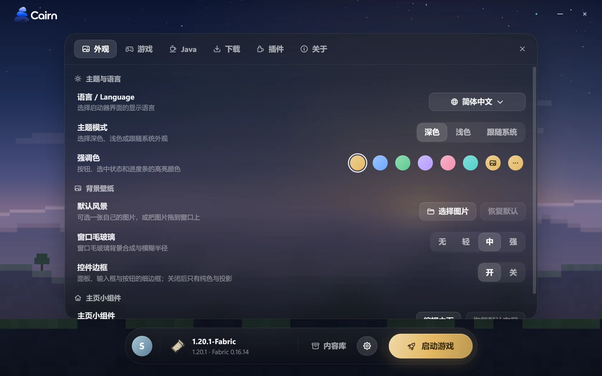

纯粹 · 优雅 · 灵动 现代 Minecraft 原生启动器
用 Rust 写成，界面自己绘制。安装、模组、账号、下载与崩溃诊断，在一扇精致的窗口中从容展开。
适用于 Windows 10 及更高版本 · 开源透明 · 第三方非官方启动器
开箱即用的生态
- Fabric
- Quilt
- Forge
- NeoForge
- OptiFine
- Modrinth
- CurseForge
- BMCLAPI
- MCIM
- Microsoft
- LittleSkin
- MultiMC / Prism
Cairn 是一个用 Rust 写成的原生程序。界面不是网页：它由自研的 GUI 库 cairn-ui 自己绘制，背景模糊和毛玻璃在 GPU 上合成。
- 没有 JVM，也没有浏览器内核
启动器进程里没有 Java 虚拟机，没有 Chromium 或 WebView。release 构建是单个 exe，约 9.6 MiB。
- 自研图形引擎，亲手绘制每一个像素
界面由本仓库自研的
cairn-ui纯原生渲染：依托tiny-skia呈现细腻抗锯齿矢量、cosmic-text精确排版复杂字形、taffy高效解析弹性布局、winit统管原生窗口。有 OpenGL 3.3 时由 GPU 合成背景模糊与毛玻璃，没有时回退到软件渲染。 - 启动器自身纯粹，而游戏本体依然需要 Java
我们为启动器卸下了运行时的负担，但 Minecraft 游戏本身仍需 Java。Cairn 会根据每个版本的规范智能推导兼容的 Java 环境，并在本地缺失时自动下载 Mojang 官方运行时，无需手动繁琐配置。
- 插件在独立进程里运行
扩展插件采用标准的 JavaScript 编写，并在由 QuickJS-NG 驱动的独立宿主子进程中运行。任何涉及网络、本地文件或外部程序的调用均需你在启用时显式授权；插件出错不会拖垮启动器。
cairn-ui自研控件体系 · 状态模型 · 优雅主题与动效taffyFlexbox / Grid 现代化弹性布局引擎cosmic-text高质量多语言文本排版与字形塑形tiny-skia纯 CPU 高性能抗锯齿 2D 矢量渲染winit · OpenGL系统原生窗口管线与 GPU 毛玻璃合成（支持软件回退）
石堆（Cairn）的哲学：每一块基石各司其职，不添一分多余的重量。
全链路生态，凝于方寸之间
将繁琐的版本架构、多源网络、账号隔离与崩溃分析沉淀于底层，呈现自然内敛的现代操作面貌。
模块化自定义仪表盘
即刻启动、常用快捷方式、数字时钟、游玩时长折线统计与动态热力图一览无余。支持通过优雅的 YAML 格式自由扩展或随心摆放小组件。
全版本与全加载器生态
跨越从最初的 Alpha、经典正式版到最新每周快照的所有官方版本（支持全新年份制版本号），开箱支持 Fabric、Quilt、Forge、NeoForge 与 OptiFine 快速安装。

多维度实例隔离与导入
既可直接沿用官方 .minecraft 目录，也可建立相互隔离的独立实例并共享全局资源池；具备五档全局隔离策略与细粒度覆盖，并能自动发现并一键迁入已有启动器的数据。

多源身份认证与加密存储
无缝集成微软 OAuth 设备码登录、自建或统一 Yggdrasil 外置认证（如 LittleSkin）以及离线账户。令牌用 DPAPI 加密保存；离线账户只是本地的玩家名配置，不是游戏许可。

模组探索与整合包流转
直连 Modrinth 与 CurseForge 海量生态，自动分析并补全必要前置依赖，支持版本更新检查；完整支持 .mrpack、CurseForge 与 MultiMC / Prism 整合包的导入与导出。

自适应多源下载引擎
聚合 Mojang 官方源、BMCLAPI、MCIM 镜像及自定义源，具备动态测速择优与故障自动熔断换源机制；支持自适应并发限流、流式计算 SHA-1 校验与大文件分块断点续传。

崩溃了？先看原因
游戏非正常退出时，启动器在本地深度比对日志、Crash Report 与 JVM hs_err 错误，用界面语言给出可能的原因，并可导出 zip 报告；其中的令牌和用户名会被打码，分享前请再检查一遍。
扩展：小组件、面板与插件
支持声明式 YAML 主页小组件与面板，以及在 QuickJS-NG 里、独立进程中运行的 JavaScript 插件。权限调用按需确认，以 --no-plugins 启动可以全部跳过。

视觉定制与多语言支持
深浅双色主题、动态拾取自定义强调色、带毛玻璃景深的自选壁纸与系统级高 DPI 平滑缩放。界面原生支持简体中文、English 与日本語三语。

实测性能指标
60ms
32ms
≈14MiB
9.6MiB
基准测试硬件与测试环境：测试设备：Intel Core i7-14700F（20 核 28 线程）、32 GB 内存、NVMe 固态硬盘、Windows 11 Pro for Workstations（Build 26200）。每项测试均由独立新进程执行，统计耗时包含进程创建全开销。测试于系统文件缓存预热状态下执行，冷盘读取没有单独测量。以上数据来自命令行工具 cairn.exe 的核心操作，不是图形界面；图形界面的启动时间和整体内存占用尚未测量，所以这里没有它们的数字。
你的数据，留在你的设备上
严格遵循《隐私政策》（版本 1.0，2026-11-06 生效）依据 0.1.0 版的源代码编写。
关于账号与游戏授权的合规声明
离线账号仅为启动器本地配置的玩家名档案，绝不构成亦不能替代 Minecraft 游戏的正版软件授权。根据《用户协议》第 3 章规定：居住在中国大陆境外的用户，必须首先通过 Microsoft 官方流程登录拥有 Minecraft Java 版的正版账户，方可使用离线账号；居住在中国大陆境内的用户，强烈建议在持有正版授权的前提下使用。
- 没有遥测、使用统计、崩溃上传、广告或行为追踪
启动器不会向开发者运营的服务器上传你的数据，开发者也不持有你的数据。
- 便携归一，数据就地存放
所有账号凭据、配置项与实例默认聚合在可执行程序同级的
.cairn目录（支持通过CAIRN_HOME灵活重定向）。删掉文件夹就清除了；游戏目录（默认的.minecraft）是另一回事，删除前请先备份存档。 - 联网是为了完成你的操作，不经过开发者
账号登录、版本索引与资源下载均直连 Microsoft、Mojang、Modrinth、CurseForge 或你手动配置的镜像源，不经过开发者。每一项请求发往哪里、发送什么，隐私政策第 3 节逐项列出。
- 令牌加密保存，其他文件是明文
在 Windows 上，保存令牌的
accounts.dat用 DPAPI 加密；config.json等其他文件是明文。 - 透明受控的更新机制
启动器默认静默检查版本清单，何时下载与替换完全由你确认；所有更新均经 SHA-256 完整性校验与就地热替换，绝无未经同意的静默强更。
获取单文件版本，或由源码亲手构建
目前面向 Windows 10 及更高版本系统提供原生支持。启动器采用免安装便携设计，没有安装包，所有数据完全内敛于旁侧的 .cairn 文件夹中。
- 开源，详见仓库。图形界面库
cairn-ui采用 MIT 或 Apache-2.0 双许可。 - 受控更新：支持静默检查与一键就地替换，升级前严格校验哈希，亦可随时在设置中关闭。
- 从源码构建要求：Windows 10 或更高版本系统，以及 Rust 1.91+（2024 Edition）。
cargo run -p cairn-app # 启动桌面应用程序
cargo build --release -p cairn-app # 编译 target\release\CairnLauncher.exe
cargo build --release -p cairn-cli # 编译 target\release\cairn.exe